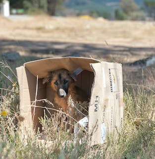

- Parce que je me soucie du bien-être des parents de mon animal.
- Pour sauver ceux qui ont été abandonnés.
- Parce que chaque vie mérite d’être respectée !
- Pour libérer une place dans le refuge pour un autre animal.
- Pour ne pas soutenir une industrie qui réduit l’animal au rang d’objet.
- Pour soutenir le travail des associations de protection des animaux.
- Parce que c’est financièrement plus intéressant !
- Parce que vous aimez vraiment les animaux 💚
Oui oui ! Il y'a bien 100 000 animaux abandonnés chaque année, juste en france. Soutenez le travail des associations de protection des animaux, des refuges, des centres et adoptez votre animal de compagnie. La société réduit l'animal au rang d'objet, acheter un animal c’est aussi soutenir une économie qui juge moral de donner un être vivant à une personne sans se soucier de ses motivations ni de sa capacité à en prendre soin, tant qu’elle sait y mettre le prix. L'adoption d'un animal doit être réfléchie et responsable car c'est un engagement pour de nombreuses années !!
Les refuges ont pour mission de recueillir les animaux abandonnés mais également de leur trouver une famille responsable qui ne va pas à nouveau les abandonner. C’est pourquoi nous nous assurons que vos conditions de vie sont compatibles avec l’animal que vous
souhaitez adopter et que vous avez pris conscience de la responsabilité liée à l’adoption. Cette démarche est à l’opposé de celle de la plupart des particuliers ou des animaleries qui ne se soucient pas des motivations des acheteurs.
Il faut dans un premier temps venir rencontrer votre futur compagnon au refuge, parfois plusieurs fois avant de prendre l’ultime décision qui nous liera pour la vie car à la Fondation Assistance aux Animaux, on estime qu’on ne choisit pas son compagnon sur une simple photo. Une empathie doit se créer et le caractère de l’animal doit être compatible avec le mode de vie de l’adoptant.
Pour les papiers, le refuge vous demandera une pièce d’identité et un justificatif de domicile récent et à jour.
Le montant demandé pour adopter un animal est une participation aux frais vétérinaires. Les chiens et chats du refuge sont : tatoués, vaccinés, stérilisés (à l’exception de certains chiens mâles) et testés. Si l’animal est trop jeune pour être stérilisé, un chèque de caution vous sera demandé. Il vous sera restitué une fois que l’animal aura été stérilisé.
L’adoption dans un refuge va de pair avec la signature d’un contrat d’adoption qui stipule vos engagements vis à vis de l’animal et du refuge dans lequel vous l’adoptez. Il vous est généralement demandé de faire stériliser l’animal si ce n’est déjà fait, de prévenir le refuge de vos nouvelles coordonnées en cas de changement de domicile ou de numéro de téléphone.
Suite à l’adoption, nos enquêteurs se déplacent pour rendre visite à l’animal afin de vérifier que les conditions sont respectées et que l’animal se porte bien. Dans le cas contraire l’animal peut être retiré.
Je veux adopter !